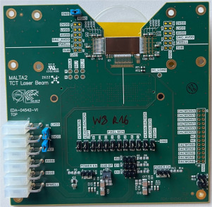
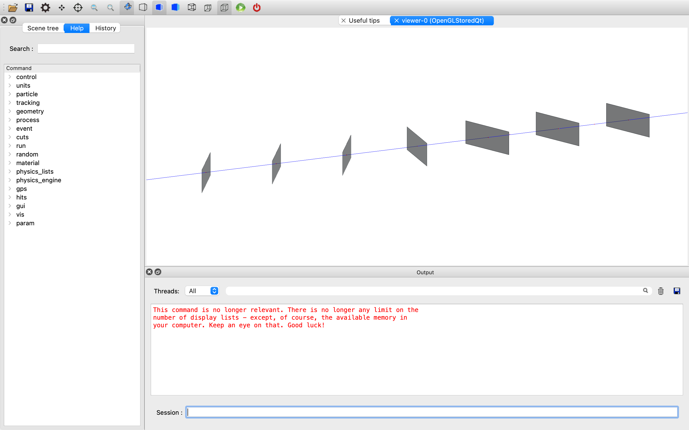

Research Projects
どうも。広島のしがない物理学徒です。
僕の研究テーマは、KEK（高エネルギー加速器研究機構）でのビームテストを円滑に進めるために、
MALTA2というATLAS実験で使われるMAPSの一種をReference Planeとしてtelescopeを設置することです。
Construction of Beam Telescope at KEK
MALTA2
Beam Test
Hardware Setup
現在取り組んでいるメインプロジェクトは、KEKにおけるビームテレスコープの設置です。
目標は、ユーザーが自分のDUT（Device Under Test）を持ち込むだけで、すぐにビームテストを行える環境を構築することです。
Reference PlaneとしてMALTA2センサを使用することで、高精度なトラッキングを実現します。精密なアライメント調整と読み出しシステムの統合を行っています。

Fig 1. テレスコープ設置の概念図
What is MALTA2?
MAPS
ATLAS
CMOS Sensor
本研究の核となるMALTA2は、CERNのATLAS実験などの将来的なアップグレードに向けて開発された、Monolithic Active Pixel Sensor（MAPS）の一種です。
センサーと読み出し回路が一体化されており、高い放射線耐性と高速な読み出し性能を兼ね備えています。これを参照面に用いることで、高レート環境下でも正確な飛跡検出が可能になります。

Fig 2. MALTA2 センサーチップ
Simulation Study with Allpix Squared
Allpix²
Corryvreckan
Geant4
ハードウェアのセットアップと並行して、Allpix Squaredを用いたモンテカルロシミュレーションも行っています。Geant4ベースの計算で、検出器の応答や分解能を評価しています。
また、再構成フレームワークであるCorryvreckanを使用し、実際のビームテストに向けた最適なジオメトリを探しています。

Fig 3. シミュレーションによる飛跡再構成